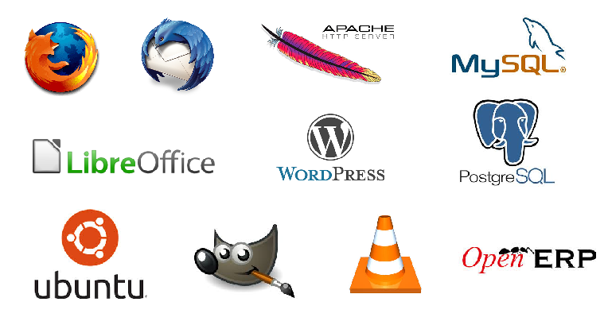
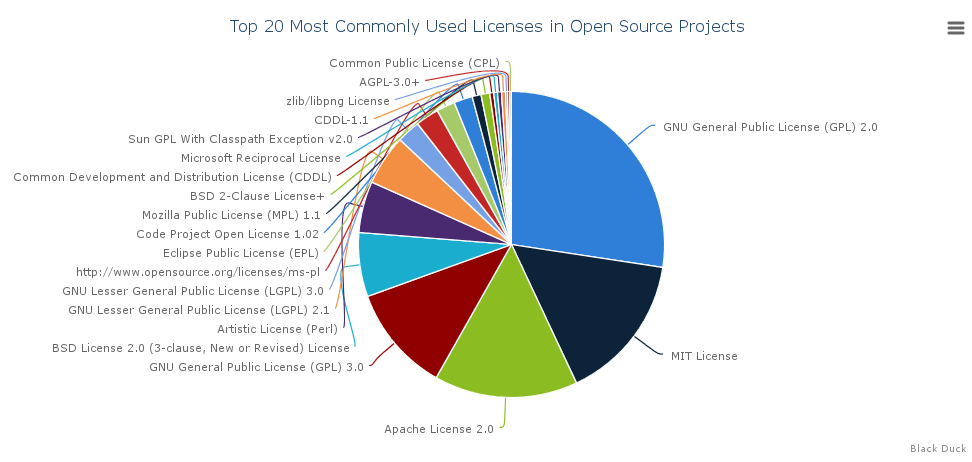

Avaliación de proxectos libres para cubrir as necesidades TIC
Pablo Sanxiao (@psanxiao)
CDTIC, Santiago de Compostela. 23-24 setembro 2014
Sumario
- Introdución
- Identificación de proxectos
-
Factores a ter en conta
- Organización comunidades de Software Libre
- Análise da información pública
- Aspectos a valorar
- Exercicio práctico
Exercicios prácticos
O software libre é... software
Pero... ten as súas particularidades
Qué é o software libre?
Software que outorga 4 liberdades aos usuario para:
- Executar o programa, con calquera propósito
- Estudar o programa. (Acceso o código fonte).
- Distribuír copias.
- Mellorar o programa e compartilo co público.
Aspectos importantes sobre os que fixarse
Privativo
- Custo?
- Código pechado
- Arquitectura pechada
- Lock In
- ...
Libre
- Soporte
- Volatibilidade
- Profesionalidade
- Documentación
- ...
Os proxectos de software libre, pola súa natureza, permiten analizar máis información: Data mining
Definición de Data Mining:
"Extracting or mining knowledge from large amounts of data"
(Han and Kamber, 2006)
Identificación de proxectos/solucións:
Como os atopamos?
Proxectos recoñecidos
Comparativas/Análises
Sitios especializados
Exercicio
Parte 1: Identificación de solucións
Que é o que un proxecto de software libre necesita?
- Web
- Lista de correo
- Control de versións
- Seguimento de erros
- Chat en tempo real
Licencia
Que é licenciar?
Poñerlle unha licenza ó meu programa. "Explicarlle" ó usuario que pode facer co meu software e que non pode facer.
Indicar por escrito que dereitos de propiedade intelectual lle cedo o usuario para que poida empregar o programa.
Que licencias libres existen?
Simplifiquemos
- Copyleft vs Non Copyleft
- Ollo coas cláusulas éticas
Exercicio
Parte 2: Análise básico (Comunidade e Licencia)
Comunidade
http://cinergetica.com.mx/wp-content/uploads/2011/12/el-senor-de-los-anillos-la-comunidad-del-anillo-la-comunidad.jpg (Esta imaxe ten os seus dereitos reservados)Modelo de goberno
- Ditador Benevolente
- Fundación
- Control dunha empresa
- Meritocrático/Democrático
Fontes de información
- Listas de correo
- Sistemas de control de versións
- Sistema de control de erros
- ...
Listas de correo
- Punto principal de comunicación do proxecto
- Públicas
- Arquívanse as mensaxes
- Ferramentas web de análise: GMANE
- Exemplo listas GNOME
Sistemas de control de versións
- Cantos desenvolvedores participan?
- Como participan?
- Canta actividade hai?
- GitHub
BugTracker
- Xestión de erros
- Planificación novas funcionalidades
- Bugzilla
Exercicio
Parte 3: Recopilar fontes de información
Como procesar toda esta información?
https://encrypted-tbn2.gstatic.com/images?q=tbn:ANd9GcQof82S1Yh_dfdIzjnRNVhEm7v_0s-i1-XWI7Ai1UYURNVNZ7_ZwA
(Licencia: Dominio Público)
Ferramentas complexas
Fontes de análise
Que valorar?
- Funcionalidade
- Usabilidade
- Custo
- Marketshare
- Soporte
- Mantemento
- Fiabilidade
- Seguridade
- Interoperabilidade
- Licencia
- ...
Funcionalidade
- Posibilidade de desenvolver funcionalidades que falten
-
Importante:
- Modelo de goberno da comunidade
- Licencia
Usabilidade
- Posibilidade de probar o software sen restricións
- Deseño: Un motor - varias interfaces
- Human Interface Guidelines
Custo
- Instalación, soporte, formación...
- Modelo de negocio
Marketshare
- Quen máis o esta usando?
Soporte
- Quen fornece soporte profesional?
-
Soporte da comunidade:
- Actividade da lista de correo
- Erros pendentes no sistema de reporte
- Tempo medio de resolución dun erro
Mantemento
- Política de versións
- Incorporación de novas funcionalidades
-
Análise cuantitativo:
- Desenvolvedores
- Actividade no SCV
Fiabilidade
- Está incluído nalgunha/varias distribucións?
Seguridade
- Discusión nas listas
- Aplicación de parches
Interoperabilidade
- Implementación de estándares
- Non hai razóns económicas
Exercicio
Parte 4: Análise en profundidade
Métricas e modelos
Exercicio
Aplicación de OpenBRR ao noso caso práctico
Licencia

Esta obra está baixo unha licencia de Creative Commons Reconocimiento-CompartirIgual 4.0 Internacional.
Os logotipos, marcas e signos distintivos que aparecen neste documento pertencen as súas respectivas compañías e están protexidos polos correspondentes dereitos de propiedade intelectual e industrial.
Avaliación de proxectos libres para cubrir as necesidades TIC
Pablo Sanxiao (@psanxiao)
CDTIC, Santiago de Compostela. 23-24 setembro 2014